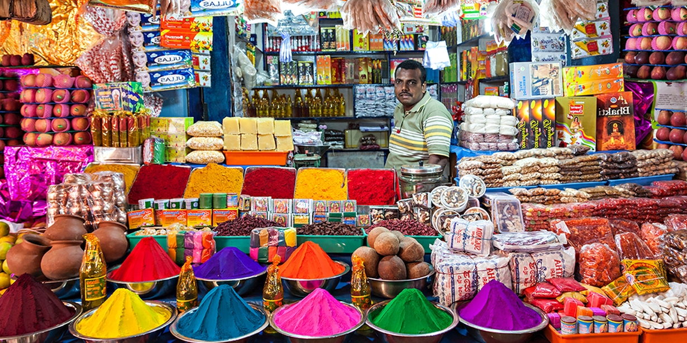
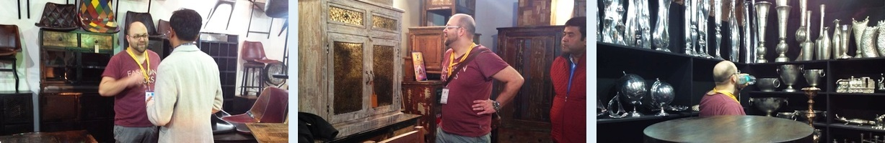
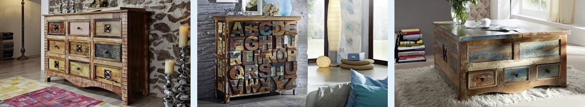
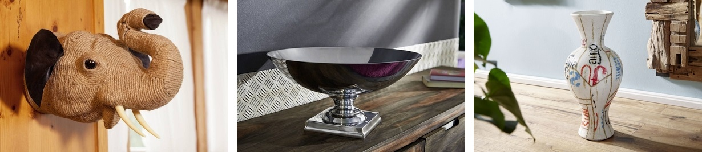

On trips to India
Most of our furniture comes from India. Here you can learn more about this colorful country and how we look for new designs.
The IHGF in New Delhi is probably the largest trade fair for arts, crafts, and gifts in Asia and is always worth a visit.

The IHGF celebrated its 30th anniversary in 2010. Over 2500 exhibitors from all over India show their goods on an area of 97,000 m². More than 6,000 buyers and 350 company agents from over 30 different countries use this platform, and the trend is growing rapidly.
India attaches great importance to the development of internationally desirable products. The country relies on the natural processing of the raw materials with its signature. Environmental awareness is playing an increasingly important role in India. Manufacturers are increasingly using vegetable dyes for dyeing and, if possible, avoid using chemicals. The organizers of the fair attach great importance to real craftsmanship. Machine mass production is not allowed.
The offer of products ranges from gift items, jewelry, watches, fashion accessories, and bags to household goods, crockery and cutlery, lighting, lamps, candles, incense sticks, decorations, furniture, floor coverings, paints, and fabrics. The exhibitors mainly use wood, metal, gold, silver, crystals and precious stones, reeds and bamboo, cotton, coconut, and linen (flax), wool, silk, jute, stones and terracotta as raw materials.
The IHGF Delhi Fair takes place three times a year, in February, April, and October. Each time with different manufacturers and new items. It's a real melting pot of innovations in the fields of handicraft, fashion and design. The Indians are extremely creative, and innovative. You see an incredible number of new products and creations.

Our friend Patrick while visiting India is interested in what's on the rise and what trends are emerging. It was during just such a tour of the fair that the idea for the SPIRIT series came up, which is one of our most popular series today.

On the exhibition, you can find such unique items like a decoration made from colored pencils or impressive huge wooden figures completely carved out of the trunk in one piece. Below you will find few examples of our unique handmade Indian decorations.
